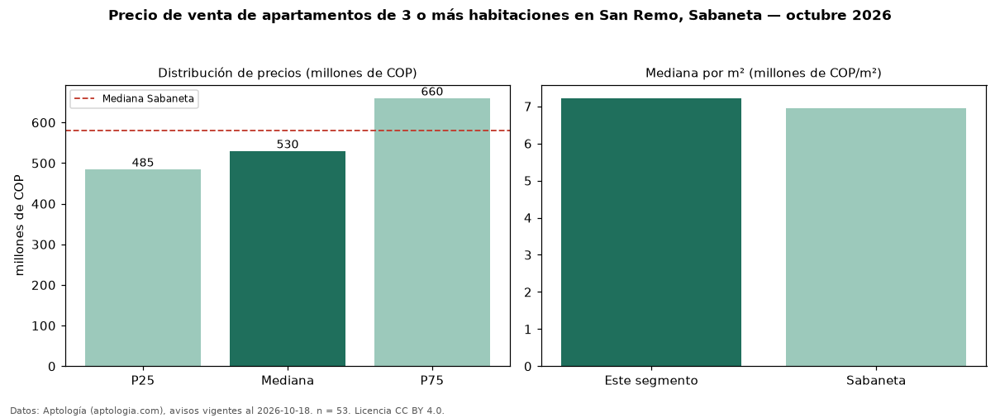

Precio de venta de apartamentos de 3 o más habitaciones en San Remo, Sabaneta — octubre 2026
En San Remo, Sabaneta, la mediana de precio de venta de apartamentos de 3 o más habitaciones es COP 530 millones, según 53 avisos vigentes. Frente a la mediana de Sabaneta para apartamentos de 3 o más habitaciones (COP 580 millones), queda 9 % por debajo. Por metro cuadrado, la mediana es COP 7,22 millones/m² (n = 53 avisos con área), 4 % por encima de Sabaneta (COP 6,95 millones/m²). Son 62 % de los 86 avisos de apartamentos en venta de la zona, cuya mediana general es COP 515 millones (+3 %). Con el precio por m² de arriendo del mismo segmento (COP 42.221/m² al mes), la rentabilidad bruta implícita es 7,0 % anual (aproximación con medianas de ofertas distintas). El área mediana anunciada es 76 m². La administración mediana declarada es COP 395.000 al mes (n = 42). El estrato más frecuente es 4 (92 % de los avisos con estrato). Datos: Aptología (aptologia.com), CC BY 4.0 — https://www.aptologia.com/venta/sabaneta/san-remo. Archivos: PDF, CSV con las cifras y gráfica PNG.

| Avisos únicos | 53 |
|---|---|
| Percentil 25 | COP 485.000.000 |
| Mediana | COP 530.000.000 |
| Percentil 75 | COP 660.000.000 |
| Mediana por m² | COP 7.222.222 |
Fuente: avisos vigentes de portales inmobiliarios recopilados por Aptología, deduplicados (mínimo 30 avisos únicos por celda). Precios pedidos, no cerrados. Fecha: 2026-10-18.